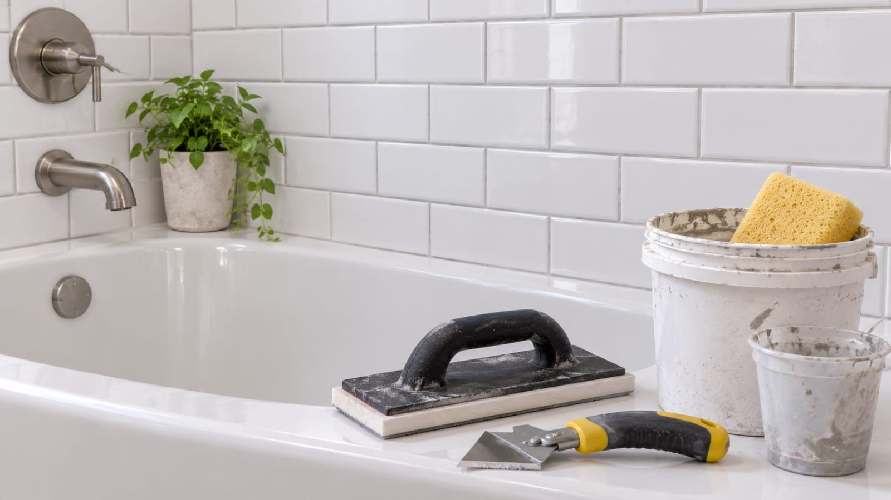
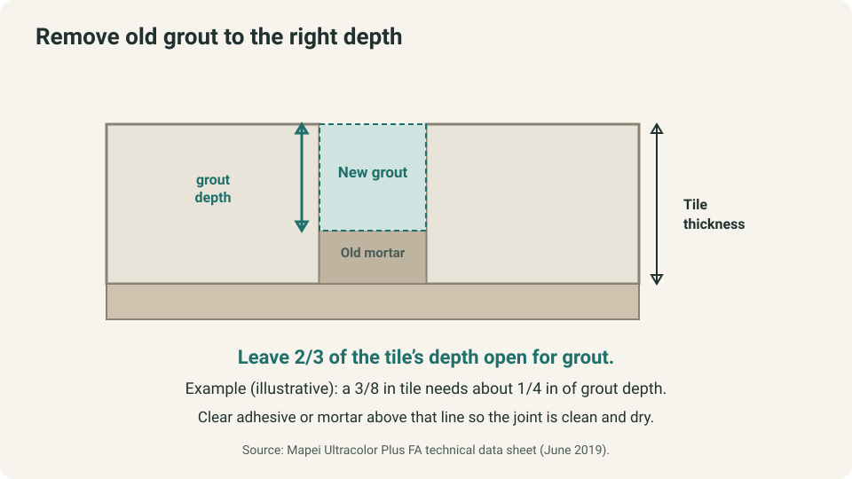
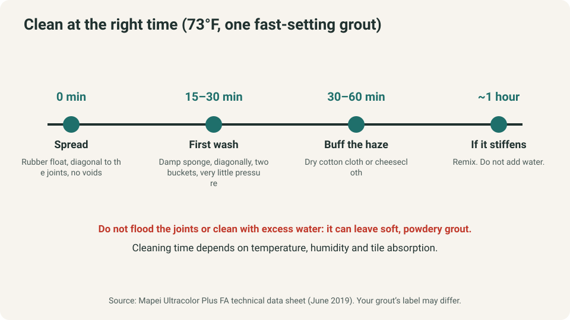
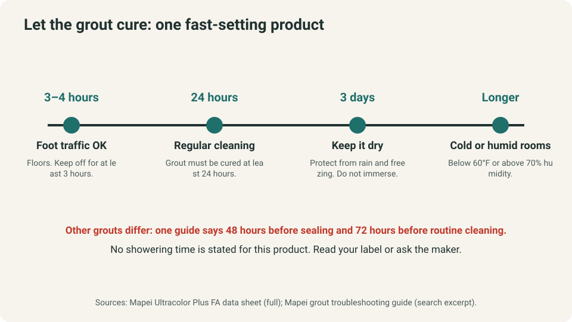

WEEKEND PROJECTS · BATHROOM REPAIR
How to Regrout a Shower Without Rebuilding It

Regrouting a shower is mostly removal, prep and patience. The new grout only lasts if the old grout is cut out to the right depth, the joints are clean and dry, and you let it cure. This guide follows one maker’s full technical data sheet for a fast-setting grout, plus mold guidance from EPA, and shows where other grout makers differ.
The quick answer
- Check what is failing. Crumbling grout is a regrout job. Loose tile, a soft wall or leaks are not.
- Cut out the old grout deep enough. Mapei’s sheet says to leave 2/3 of the tile’s depth open for grout, with joints clean and free of standing water, dust and dirt.
- Clean at the right time and do not over-wet it. For the product we opened, that is 15 to 30 minutes after grouting at 73°F.
- Let it cure, longer in a humid bathroom. Cure times differ between grouts, so follow your label.
Quick plan
| Item | Detail |
|---|---|
| Time | A day for removal, prep and grouting, then a cure of about three days for the product we opened |
| Materials | Grout saw, vacuum, rubber grout float, sponge, two buckets, cotton cloth, mixing cup, grout, gloves, eye protection, dust mask or respirator |
| Best for | Cracked, crumbling or stained grout between firmly set tiles |
| Stop if | Tiles are loose, the wall or floor is soft, mold covers a large area, or water leaks behind the tile |
Step 1: Check what you are fixing
Press on the tiles and look at the wall around the shower. Grout that has cracked, crumbled or stained is the usual case. Loose tiles, a soft wall or water stains outside the shower point to a bigger problem. Mapei’s sheet says tiles must be firmly set and the adhesive completely dry before grouting. For a loose or cracked tile, see our guide to replacing one cracked floor tile, which covers setting a tile with full mortar coverage.
EPA says the key to mold control is moisture control, and that if mold covers more than 10 square feet or there has been a lot of water damage you should consult its remediation guide. Our guides on reducing bathroom condensation and where to put water leak sensors cover the moisture side.
Grout is not the waterproofing of a shower, our reading rather than a statement from these sources. If you suspect leaks behind the tile, stop and ask a pro.
Step 2: Choose the grout
The data sheet we opened describes Ultracolor Plus FA as a fast-setting, polymer-modified grout for joints from 1/16 to 3/4 inch, sold as a replacement for sanded and unsanded grouts. It says sealing is not required, though a penetrating sealer may still be applied. It is not for heavy industrial installations, and for highly chemical- and stain-resistant needs the maker points to its epoxy grouts.
It also warns that some glass, glazed ceramic, marble, granite and agglomerate tiles can be stained, scratched or dulled by pigmented or sanded grout, and says to test on a separate sample first. Other grouts differ: a Mapei sheet we saw as an excerpt for a different product recommends sealing with two coats at least 24 hours after grouting. Read your grout’s sheet.
Step 3: Remove the old grout to the right depth

- Cut along the joint with a grout saw, keeping the blade centered so the tile edges are not chipped.
- Remove enough that 2/3 of the tile’s depth is open for new grout. Clear mortar or adhesive that sits above that line.
- Vacuum out the dust, and check that nothing crumbles from the joint walls.
Wear eye protection, and a dust mask or respirator. Cement grout dust can contain silica, our reading rather than a statement from the Mapei sheet. OSHA’s fact sheet on grinders says not to clean up with compressed air or blowers, and to use a HEPA vacuum or wet methods instead.
Step 4: Clean and dry the joints
- Mold. EPA says to scrub mold off hard surfaces with detergent and water and dry completely, and not to paint or caulk moldy surfaces. Grouting over it is the same idea, our reading.
- Joints. The Mapei sheet says joints must be clean and free of standing water, dust, dirt and foreign matter, with all spacers removed.
- Surface. Clean the tile thoroughly so dust and contaminants do not discolor the grout.
- Wait for dry. EPA says to dry water-damaged areas within 24 to 48 hours to prevent mold.
Step 5: Mix and apply
- Dry-blend all the powder first if you are using more than one bag, and have the same person mix every batch.
- Mix with cool, clean water only, no additives. For the 10 lb bag, the sheet gives 1 to 1.1 quarts of water, mixed at low speed (about 350 rpm) for 4 to 5 minutes until smooth and creamy.
- Use it between 50°F and 95°F. In hot weather the sheet asks for cold mixing water.
- Slightly dampen the tile with a sponge just before grouting. Do not flood the tiles or leave standing water in the joints.
- Spread the grout with a rubber float, compacting it so the joints are full with no voids or gaps, and move the float diagonally to remove the excess.
- Pot life is 30 minutes to 1 hour. If it stiffens in the bucket, remix without adding more liquid.
Mapei’s sheet also asks for expansion and control joints as specified in TCNA handbook method EJ171. A tub-to-wall corner is a change of plane, so in our reading it needs a flexible sealant, not grout; see our guide to replacing bathtub and shower caulk. Ask your grout’s maker.
Step 6: Clean up at the right time

- Let the grout set for typically 15 to 30 minutes at 73°F before cleaning. Highly absorptive tile needs less, about 5 to 10 minutes.
- Use two buckets, one for rinsing the sponge and one for clean water. Wring the sponge out so it does not drip, and pull it diagonally across the joints with very little pressure.
- Change the water often to limit haze, and avoid excess water, which can discolor the grout and leave soft or powdery joints.
- Buff with cheesecloth or a clean, dry cotton cloth when haze shows, usually 30 to 60 minutes after grouting.
- Never use acid on marble, glazed tile or pigmented grout.
Step 7: Let the grout cure

| Source | Early use | Cure and sealing |
|---|---|---|
| Mapei Ultracolor Plus FA (2019, full sheet) | Floors: 3 hours without foot traffic. Regular cleaning after 24 hours | Protect from rain and freezing and do not immerse for 3 days. Cure 3 days; longer below 60°F or above 70% humidity. Sealing not required |
| Mapei grout troubleshooting guide (search excerpt) | Wait 72 hours before routine cleaning | At least 48 hours before applying a sealer |
| Laticrete cement grout FAQ (search excerpt) | Not stated in the excerpt | Cure at least 72 hours at 70°F before a sealer |
Do not average these. The sheet we opened gives no showering time, so follow your label, ask the maker, and remember a bathroom is warm and humid, which the sheet says lengthens curing.
Step 8: Check the result
- Joints should be full, flush with the tile edge and free of pinholes.
- Wipe off any haze with a dry cloth. Persistent haze has its own maker bulletin, so ask before using a cleaner.
- Look again after the first few showers. The sheet recommends a neutral-pH cleaner for upkeep, a clean-water rinse and avoiding harsh chemicals.
Quick win (10 minutes)
Press on every tile in the shower and probe a few grout lines with a screwdriver tip. Mark soft spots, loose tiles and any mold. That tells you whether this is a regrout job or a repair first.
Common mistakes
- Grouting over mold or a damp joint.
- Not removing enough old grout, so the new grout is too shallow.
- Mixing with too much water, or adding water to stiffened grout.
- Cleaning with excess water or before the grout has set.
- Using acid on marble, glazed tile or pigmented grout.
- Showering before your label’s cure time.
- Using grout at a corner that needs flexible sealant.
When to call a professional
- Tiles are loose, or the wall or floor is soft.
- Mold covers more than about 10 square feet, or there has been a lot of water damage.
- Water leaks behind the tile or the shower pan.
- The tile is marble, glass or another material that grout can stain or scratch.
- You are unsure what grout your tile can take.
FAQ
Can I regrout over old grout?
The Mapei sheet we opened wants the joints cleaned out so that 2/3 of the tile’s depth is open for grout, and free of dust, dirt and standing water. So old grout and mortar need to be cut back first.
Do I need to seal the grout?
Not for the product we opened, though it says a penetrating sealer may be applied. Other grouts differ: one Mapei guide asks for 48 hours before sealing, and a Laticrete note says 72 hours.
How long before I can shower?
The sheet we opened gives no showering time. It asks for 3 days of protection and no immersion, and longer in cold or humid rooms. Follow your label or ask the maker.
Why must I avoid cleaning with a lot of water?
The Mapei sheet says it can cause discoloration and soft or powdery joints.
Can I regrout only part of the shower?
You can, but the new grout may not match the old, since grout color and finish vary and grout ages. Test a small area first.
Is grout waterproof?
Neither source we opened says so. Treat grout as a joint filler and ask a pro about waterproofing behind the tile.
What this guide assumes
It covers cement-based grout between firmly set ceramic or porcelain tiles in a typical U.S. shower, using one maker’s full data sheet as the main source. The silica remark, the corner advice and the waterproofing note are our own precautions. HomeProjectWise has not applied this grout, and we do not endorse a brand or product.
Keep going
- How to replace one cracked floor tile if a tile, not just the grout, is damaged.
- How to reduce bathroom condensation to cut the moisture that damages grout.
- Where to put water leak sensors if you suspect a leak.
- How to replace bathtub and shower caulk for the flexible joints at the tub and corners.
Sources and last checked
The Mapei data sheet was opened and read in full on 17 November 2026. The other sources were read as search excerpts or, for OSHA, opened earlier for another guide, so we cite them for single statements. They are documents for specific products, and your own grout’s label overrides them.
- Mapei, Ultracolor Plus FA technical data sheet (version 5 June 2019): https://cdn.thefloorbox.ca/images/mapei/6bu011505_1472.pdf
- Mapei, Grout Troubleshooting Guide (search excerpt only): https://www.buildsite.com/pdf/mapei/MAPEI-Grout-Troubleshooting-Guide-2037517.pdf
- Laticrete, “What are the most common cement grout problems, and how can I avoid them?” (search excerpt only): https://cdn.laticrete.com/en/support-and-training/downloads-and-faq/faqs/troubleshooting-a-project/cement-grouts
- EPA, “A Brief Guide to Mold, Moisture and Your Home” (search excerpts only): https://www.epa.gov/mold/brief-guide-mold-moisture-and-your-home
- OSHA, Handheld Grinders for Tasks Other Than Mortar Removal (FS-3628), opened for the 007 guide: https://www.osha.gov/sites/default/files/publications/OSHA_FS-3628.pdf